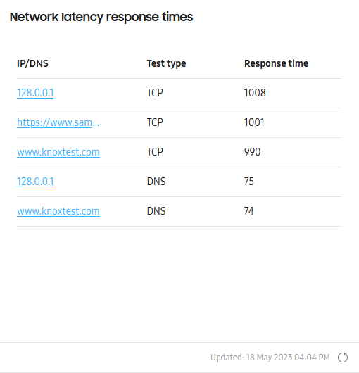
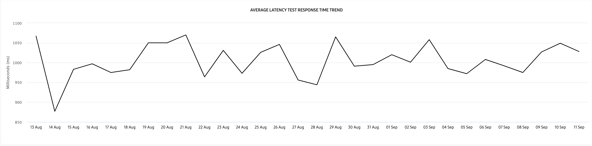

Network latency
Last updated December 6th, 2023
The Network latency response times insight lets you see which IP addresses or domains have the longest response time or don’t respond at all to device requests. This data can help you troubleshoot possible issues related to the application server, for various device groups across the organization.
Main tile view

The main tile view provides a table of the top 5 IP addresses or website names that take the longest to respond to device requests.
In the IP/DNS column, you can click the IP address or DNS to get a drill-down view of the latency data. In the Test type and Response time columns, you’ll see the type of request made and the total response time in milliseconds respectively.
If you defined a Related app in the Settings > NETWORK tab, you can also see which apps had the longest response times when you hover your cursor over a value in the Response time column.

Clicking any IP address or domain name takes you to the Network latency drill-down view.
Drill-down view
The drill-down view provides two charts to help you analyze network latency trends:
Above the charts, you’ll see a ribbon displaying key network latency information.
This ribbon provides the following information:
| Field | Description |
|---|---|
| Response count | How many times your devices reached the IP address or DNS over the selected reporting period. |
| Average response | The average time it took to get a response from the IP address or DNS over the selected reporting period. |
| Median response time | The mid-value of all response times over the reporting period. |
| Maximum response time | The longest time it took to get a response from an IP address or DNS over the selected reporting period. |
| Minimum response time | The shortest time it took to get a response from an IP address or DNS over the selected reporting period. |
| Failed events | The total number of times your devices failed to get a latency test response, either from the server not responding, or from the test stopping on its own due to the latency timeout setting. |
Average latency trend

The AVERAGE LATENCY TEST RESPONSE TIME TREND chart lets you see the average time it takes (in milliseconds) to respond to the particular address over the requested data period. Hover your cursor over the graph to view detailed information like the total test count, and average/median/max latency times for each day.
Total latency trend
The TOTAL LATENCY TEST COUNTS ABOVE THRESHOLD chart lets you see the total number of times a query took too long to respond — or didn’t respond at all — based on the pre-defined latency response time thresholds.
Depending on the type of latency test you’re conducting (PING, DNS, or TCP), the following values define the lower and upper thresholds for the chart:
| Threshold | Test result bounds |
|---|---|
| Lower | Ping of 20 ms DNS of 80 ms TCP of 1,200 ms |
| Upper | Ping of 40 ms DNS of 130 ms TCP of 1,800 ms |
Hover your cursor over a graph to view the total number of delayed-response or no-response issues per day.
Towards the bottom of the chart, you’ll find a legend that color-codes the different trend graphs for No response, Lower threshold, and Upper threshold respectively. Click any item in the legend to show or hide the graph on the chart.
Response time per group
In the RESPONSE TIME PER GROUP data table below, you’ll see a summary of your device groups’ network latency data. In the ACTIONS drop-down, you can download a CSV file of the network latency data for groups in your fleet, or for devices in a specific group.
Download CSV file for groups in your fleet
To download the CSV data for groups in the fleet, select one or more groups from the list, then click ACTIONS > Download as CSV. You can also perform this action without selecting a group. If no group is selected, the CSV file will contain data for all groups in the fleet. Once downloaded, the Network_response_time_group_list CSV file provides the same data set from the RESPONSE TIMES PER GROUP table.
Download CSV file for devices in a specific group
To download the CSV data for devices in a specific group, select a single group from the list, then click ACTIONS > Download device list as CSV.
Note
If you select more than one group from the list, this action is not available.
Once downloaded, the Latency_response_time_device_list CSV file provides a data set different from the RESPONSE TIMES PER GROUP table. In this CSV file, you’ll get the following data:
| Property | Description |
|---|---|
| IMEI/Serial number | The unique ID for each device. |
| Device group | The group that the devices belong to. |
| Network type | Indicates the type of network the tested device was connected to, Wi-Fi or Mobile. |
| Network name | Indicates Wi-Fi SSID the device is connected to, or in the case of mobile data, the Network name is null. |
| RSSI (dBm) | The network signal strength. If the device is connected to a mobile network and the user didn’t grant Location permission, RSSI has a default value (RSSI: +1). Normal RSSI value is negative (for example, -1). |
| Test type | The latency test type that you configured in Settings (for example: PING/DNS/TCP). |
| Server (IP/Domain) | The URLs that you configured in Settings. |
| Response time (ms) | The length of time it took to get a response from the IP address or DNS server at the time stamp. |
| Timestamp | The time when the device performed latency test. |
Is this page helpful?